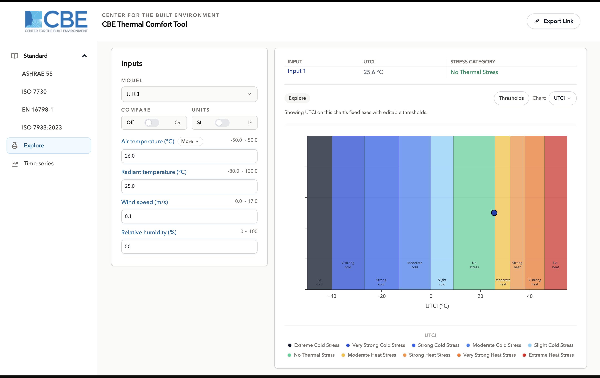
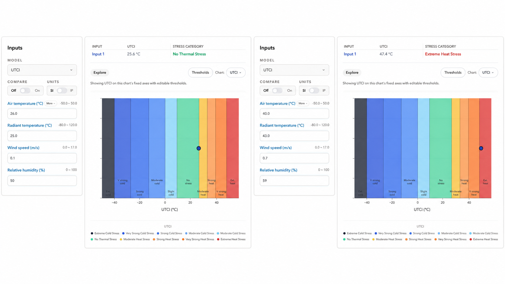

Explore
/explore/7 modelsSharing enabled
Overview
Explore is the workspace for questions the standards do not answer. It offers every model that can be drawn as a field, lets you choose which quantities go on the chart axes, and lets you edit the band edges that classify the result. There is no compliance verdict here, by design.
The layout is the same as a standard workspace navigation on the left, inputs beside it, results and charts to the right but the chart carries additional controls that a compliance workspace does not offer.

Primary interface components
Model selection
Seven of the nine models are available here:
- PMV / PPD (ASHRAE 55) and PMV / PPD (ISO 7730) also available on their own compliance workspaces.
- PHS (ISO 7933:2023) also on its compliance workspace and in Time-series.
- UTCI, Heat Index, Humidex and Wind Chill available only here, because they belong to no building standard.
The two Adaptive models are deliberately absent. Their band edges are functions of outdoor temperature rather than fixed numbers, so an editable-band workspace would misrepresent them.
Input section
The same controls as any workspace model, compare, units, and the share button in the header followed by the fields the selected model requires. The set of fields changes substantially with the model: Heat Index asks for two, PHS asks for six.
Each model carries its own accepted range on every input, and those ranges are narrower here than a comfort model's. A value outside the range is marked and not calculated.
Results display
The model's outputs, without a compliance statement. Where a model has a classification scale UTCI's ten stress categories, Heat Index's risk levels the category is reported alongside the value.
Visualization charts
Every model in Explore has a banded field chart, and several add a chart of their own. Above the chart are three controls that exist only in this workspace:
- X and Y axis pickers choose which of the model's quantities the field is drawn over. Inputs not on an axis are held at their panel values, so the chart is a slice through the model at the state you have set.
- Output selection where a model produces more than one quantity worth plotting, choose which one colours the field. PHS offers three: limiting exposure time, rectal temperature, and predicted water loss.
- Band editor edit the numeric edges of the bands, apply them to the chart, or reset to the model's declared defaults.
A few models lock an axis where the second quantity is intrinsic to the index Wind Chill keeps wind speed on Y. The chart selector also carries the export options, as on every other workspace.
Assessment methods
Editing the bands
The band editor lists the current bands as numeric ranges with their labels and colours. Changing an edge and applying it redraws the chart immediately.
Editing a band does not change the calculation. The model returns the same numbers for the same inputs; bands are a classification laid over the result. What changes is which region a point is reported to fall in which is exactly what makes the editor useful for testing a proposed criterion, and exactly why the result is not a compliance statement.

The four index models
UTCI, Heat Index, Humidex and Wind Chill are reachable only from this workspace. Each is defined over a limited envelope of conditions Heat Index and Humidex over warm humid air, Wind Chill over cold windy air, UTCI over a broad but still bounded outdoor range and the input fields carry those limits. A number produced outside the range is not meaningful, whatever the chart draws.
Additional capabilities
Axis selection. Any entered quantity can carry either axis, and each axis excludes the quantity the other holds.
Chart export. Any chart can be exported as an image from the chart selector menu, with the same legend as the screen.
Compare. Up to three input sets, with a picker for which set the chart is drawn around as on the standard workspaces.
Input modifiers. Available on the two PMV models only, exactly as on their compliance workspaces. See Input modifiers.
Unit selection. SI and Inch-Pound, held internally in SI.
Sharing. The link button encodes inputs and chart selection, including the axis and output choices.
documentation/ranges page, and that URL
redirects here. The behaviour is not identical treat this page as the current description rather than the old
one.Where to go next
- ASHRAE 55 the same PMV models, assessed against the standard.
- Time-series exposure that changes over time, rather than one steady state.